3 Data visualization
Data visualization is a crucial step of data analysis, as it can help us in:
- Understanding the distribution of our data
- Evaluate outliers
- Visualize immediately the differences between groups
- Communicate our results to peers
I suggest you to visualize data as soon as you have finished to prepare them, prior to any statistical test (even prior to test for parametric assumptions), that’s why today we are doing it.
3.1 Data visualization in R with ggplot2
ggplot2 is a package built for data visualization in R. It is simple to use and it works mainly on dataframes.
To create a plot, we need to use different functions, that act as single building blocks to change single aspects of the plot. Here an example of mock code to create a plot with all the functions:
ggplot() +
geom_<type>() +
labs() +
scale_<type>() +
facet_<type>() +
coord_<type>() +
theme_<type>
But, do we need all of them? No, the basic plots can be created with just ggplot() + geom_<type>().
3.2 Geom
The geom function specifies the “geometry” we want to give to the data: basically, which type of graph we want (barplot, scatter, histogram, etc). It is the necessary and sufficient function to create a plot.
Here the list of all possible geom to use with the basic package.
First of all, let’s load the data from previous session, and keep only the rows with all the information:
suppressPackageStartupMessages(library(tidyverse))
df <- read.csv("output/clinical_data_enriched.csv", header = T, stringsAsFactors = T)
df <- na.omit(df)
str(df)'data.frame': 160 obs. of 26 variables:
$ patient_id : Factor w/ 240 levels "PT-001","PT-002",..: 2 3 4 5 7 8 9 10 11 12 ...
$ site : Factor w/ 3 levels "Milan","Rome",..: 2 2 3 3 2 2 1 2 1 2 ...
$ visit_date : Factor w/ 218 levels "2018-01-14","2018-01-24",..: 75 150 52 104 80 214 57 146 125 170 ...
$ visit_year : int 2020 2023 2020 2023 2020 2025 2020 2023 2023 2025 ...
$ visit_month : int 8 10 3 3 9 10 4 9 6 3 ...
$ visit_day : int 15 15 6 30 9 7 19 27 29 20 ...
$ age : int 40 59 46 58 51 34 43 60 65 52 ...
$ sex : Factor w/ 2 levels "Female","Male": 2 1 2 2 2 1 2 2 1 2 ...
$ smoking : Factor w/ 3 levels "current","former",..: 1 2 1 2 2 3 3 2 1 3 ...
$ treatment : Factor w/ 3 levels "Control","Drug_A",..: 3 2 2 3 2 1 3 2 1 2 ...
$ stage : Factor w/ 4 levels "I","II","III",..: 1 1 1 3 1 1 3 2 2 3 ...
$ weight_kg : num 100.9 65 95.9 75.7 69.7 ...
$ height_cm : num 185 166 182 168 170 ...
$ systolic_bp_mmhg : int 143 152 142 160 137 146 151 159 125 147 ...
$ diastolic_bp_mmhg: int 102 98 88 96 96 106 94 104 76 96 ...
$ glucose_mgdl : int 105 110 120 131 108 93 106 110 94 86 ...
$ cholesterol_mgdl : int 239 146 232 192 163 199 200 185 209 222 ...
$ crp_ngml : num 6.13 7.81 3.35 21.72 5.41 ...
$ height_m : num 1.85 1.66 1.81 1.68 1.7 ...
$ BMI : num 29.4 23.7 29.1 26.8 24.2 29.8 24.8 26.9 30.5 29.6 ...
$ BMI_class : Factor w/ 4 levels "Normal","Obese",..: 3 4 3 3 4 3 4 3 1 3 ...
$ hemoglobin_gdl : num 15 11.8 16 15.4 14 16.2 10.5 15.6 12.4 14.5 ...
$ wbc_10e9l : num 7.49 7.46 7.09 6.63 6.99 9.26 4.79 5.65 8.39 7.87 ...
$ platelets_10e9l : int 270 252 233 192 195 188 163 269 165 263 ...
$ alt_ul : int 56 27 20 16 61 51 50 18 47 51 ...
$ creatinine_mgdl : num 1.58 1.09 1.17 1.06 1.15 1.06 1.21 1.08 1.12 1.03 ...
- attr(*, "na.action")= 'omit' Named int [1:80] 1 6 14 21 25 33 46 49 52 54 ...
..- attr(*, "names")= chr [1:80] "1" "6" "14" "21" ... patient_id site visit_date visit_year visit_month visit_day age
PT-002 : 1 Milan:65 2020-07-21: 3 Min. :2018 Min. : 1.000 Min. : 1.00 Min. :33.00
PT-003 : 1 Rome :50 2018-03-03: 2 1st Qu.:2020 1st Qu.: 3.750 1st Qu.:10.00 1st Qu.:48.00
PT-004 : 1 Turin:45 2018-07-18: 2 Median :2023 Median : 6.000 Median :18.00 Median :56.50
PT-005 : 1 2020-05-23: 2 Mean :2022 Mean : 5.969 Mean :17.16 Mean :56.41
PT-007 : 1 2020-10-16: 2 3rd Qu.:2025 3rd Qu.: 8.000 3rd Qu.:24.00 3rd Qu.:64.00
PT-008 : 1 2023-03-06: 2 Max. :2025 Max. :11.000 Max. :31.00 Max. :85.00
(Other):154 (Other) :147
sex smoking treatment stage weight_kg height_cm systolic_bp_mmhg
Female:83 current:44 Control:51 I :47 Min. : 39.40 Min. :148.9 Min. :120.0
Male :77 former :55 Drug_A :62 II :53 1st Qu.: 66.17 1st Qu.:162.4 1st Qu.:138.0
never :61 Drug_B :47 III:35 Median : 75.75 Median :168.2 Median :146.0
IV :25 Mean : 77.59 Mean :169.2 Mean :145.9
3rd Qu.: 88.33 3rd Qu.:174.6 3rd Qu.:153.0
Max. :132.90 Max. :191.3 Max. :178.0
diastolic_bp_mmhg glucose_mgdl cholesterol_mgdl crp_ngml height_m BMI
Min. : 73.00 Min. : 75 Min. :113.0 Min. : 1.930 Min. :1.489 Min. :16.00
1st Qu.: 89.00 1st Qu.: 98 1st Qu.:187.8 1st Qu.: 5.300 1st Qu.:1.624 1st Qu.:24.18
Median : 96.00 Median :109 Median :205.5 Median : 8.465 Median :1.682 Median :26.90
Mean : 95.46 Mean :110 Mean :206.1 Mean :10.525 Mean :1.692 Mean :26.98
3rd Qu.:101.00 3rd Qu.:119 3rd Qu.:223.2 3rd Qu.:13.165 3rd Qu.:1.746 3rd Qu.:30.50
Max. :120.00 Max. :147 Max. :307.0 Max. :42.090 Max. :1.913 Max. :40.70
BMI_class hemoglobin_gdl wbc_10e9l platelets_10e9l alt_ul creatinine_mgdl
Normal :46 Min. : 9.20 Min. : 2.310 Min. : 60.0 Min. : 10.00 Min. :0.630
Obese : 9 1st Qu.:12.40 1st Qu.: 5.518 1st Qu.:191.8 1st Qu.: 32.75 1st Qu.:1.018
Overweight :65 Median :13.25 Median : 7.000 Median :232.0 Median : 46.50 Median :1.140
Underweight:40 Mean :13.50 Mean : 6.758 Mean :231.7 Mean : 52.20 Mean :1.138
3rd Qu.:14.70 3rd Qu.: 7.902 3rd Qu.:271.0 3rd Qu.: 61.00 3rd Qu.:1.252
Max. :17.00 Max. :11.380 Max. :391.0 Max. :161.00 Max. :1.580
3.2.1 Barplot
We create a basic barplot to show the number of patient for each stage using the geom_bar function:
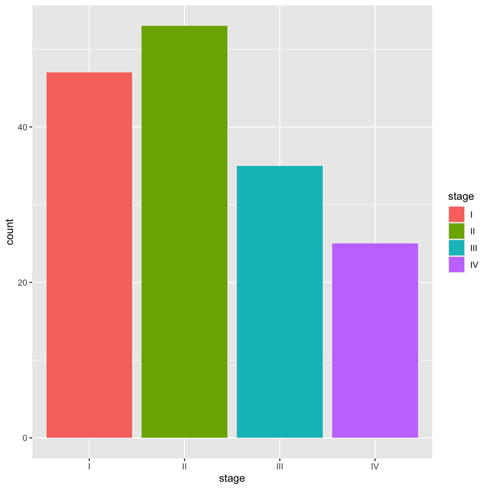
Let’s add some colors. We can set colors for all bars:
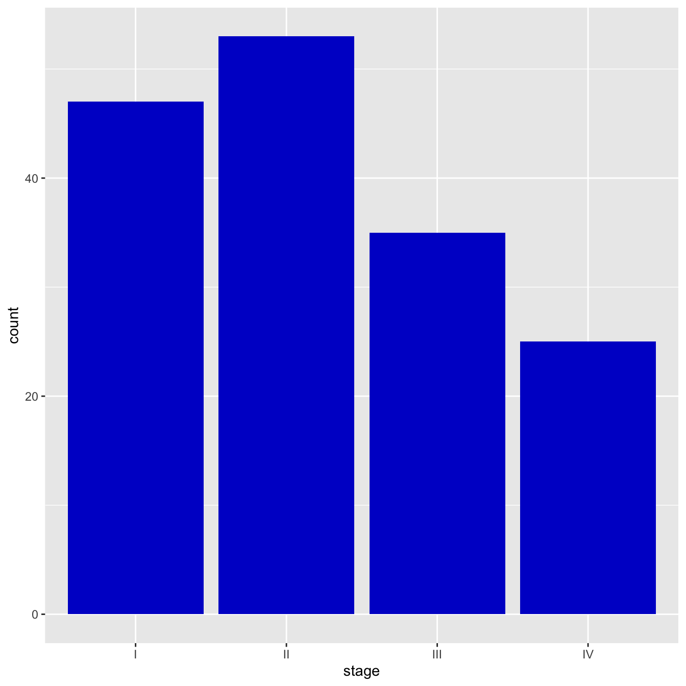
Or based on stage:
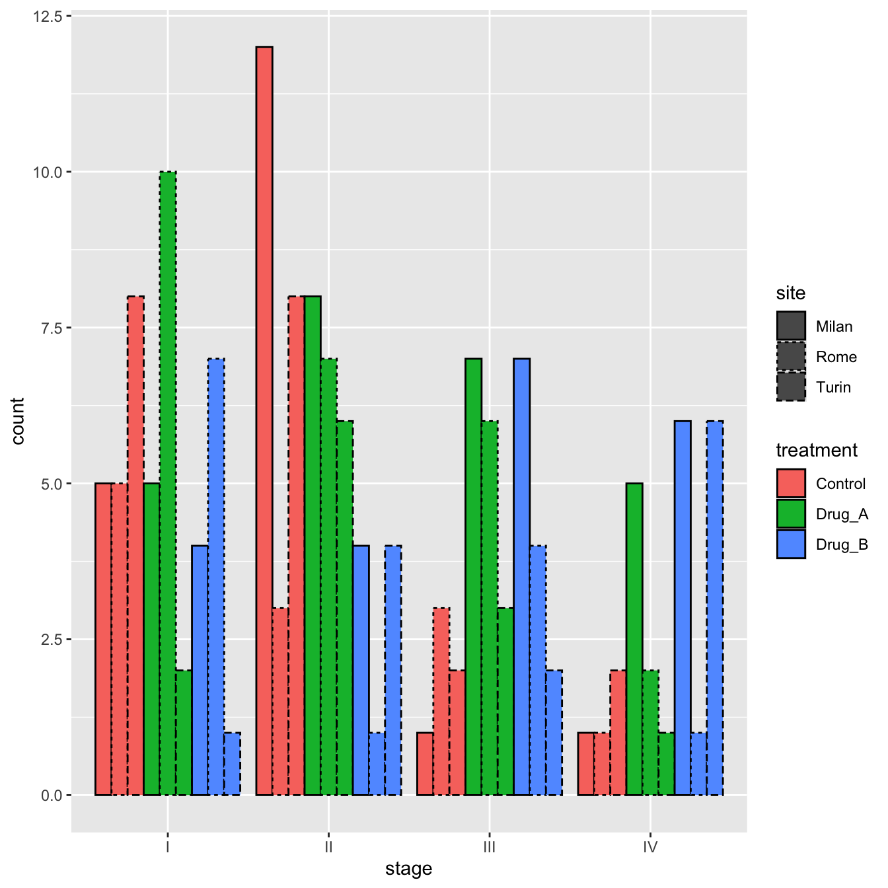
One of the main features of ggplot is that we can easily split data on x axis based on another column. Let’s say we want a bar for each treatment within each stage; we can achieve it setting the column in another aes option:
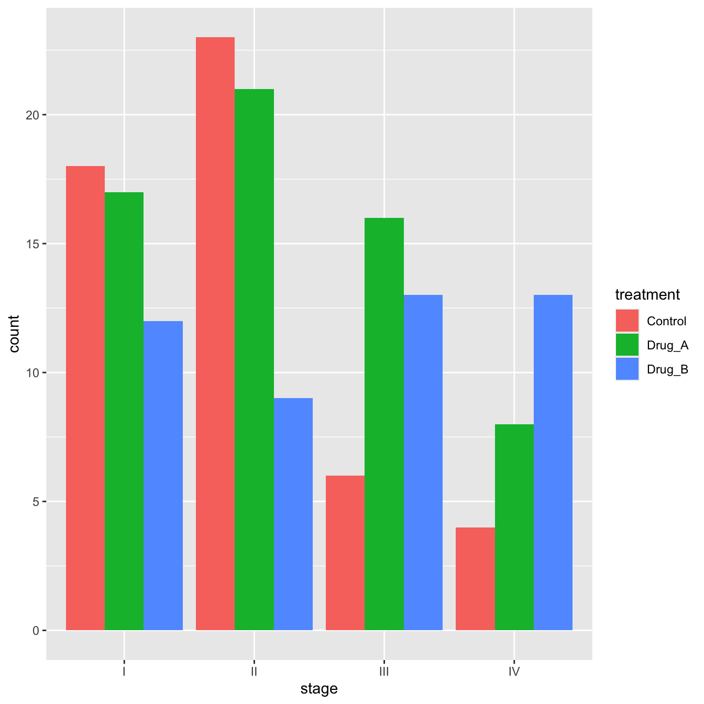
We can set different options in geom bar (both in aes or not), like color (the color of the outline of the bar), linewidth (the size of the outline), linetype (type of the outline of the bars, like dotted or continuous). Here you can find all the options. Here an example:
all_n_barplot <- ggplot(df) +
geom_bar(mapping = aes(x = stage, fill = treatment, linetype = site), position = "dodge", color = "black", linewidth = 0.5)
all_n_barplot
3.2.1.1 Stat identity
In this case, geom_bar counts the occurrence of each label of stage and plot them. But what if we have a dataframe with the actual data we want to plot? Let’s say that we want to plot the mean values of “diastolic_bp_mmhg” of Stage I females for each treatment; first, we have to create the dataframe for it by filtering the data and calculating the mean:
stageI_femalse_diastolic_means <- df %>%
filter(stage == "I" & sex == "Female") %>%
group_by(treatment) %>%
summarise("mean_diastolic" = mean(diastolic_bp_mmhg))
stageI_femalse_diastolic_means# A tibble: 3 × 2
treatment mean_diastolic
<fct> <dbl>
1 Control 96.7
2 Drug_A 92
3 Drug_B 92 Then we can use the function specifying both x and y as aes:
stageI_female_diastolic_means_barplot <- ggplot(stageI_femalse_diastolic_means) +
geom_bar(mapping = aes(x = treatment, y = mean_diastolic, fill = treatment), stat = "identity")
stageI_female_diastolic_means_barplot
3.2.2 Scatter plot
If we want to create a scatter plot, we can use geom_point function.
We can create the plot between weight and height:
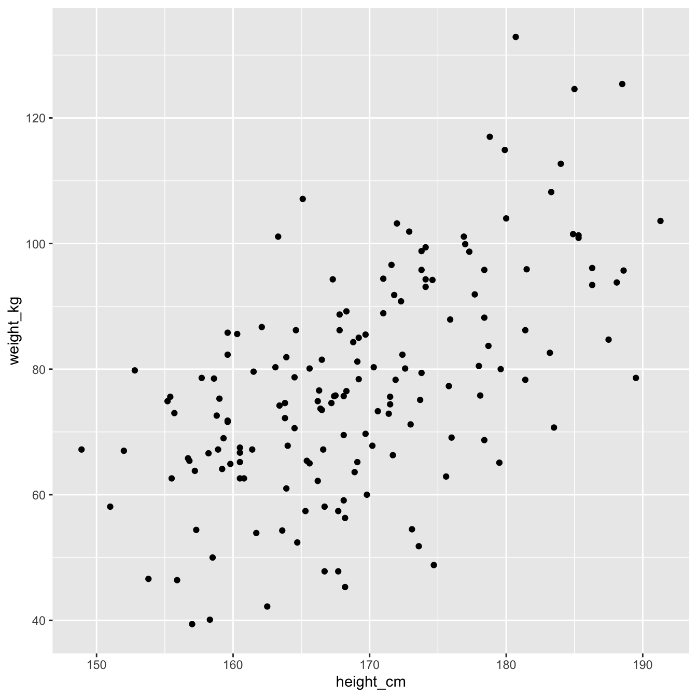
Just from this plot we can see that there is a positive correlation. We can also change color, shape size of the dots. As before, all that is inserted in aes will apply to each dot based on the value of the corresponding column, while outside aes is applied to all dots:
corr_plot <- ggplot(df) +
geom_point(aes(x = height_cm, y = weight_kg, color = age), size = 3, shape = 18)
corr_plot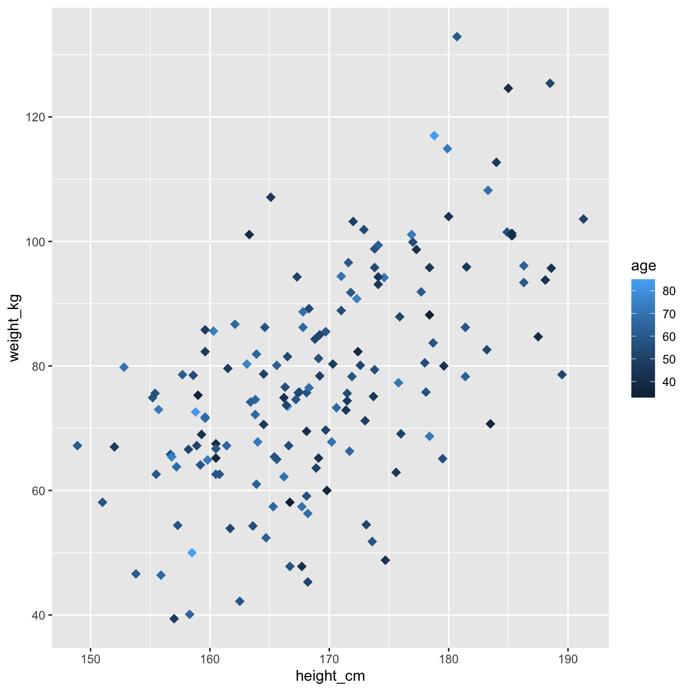
Here the complete list of options for geom_point.3.2.3 Boxplot
Next, we will see how to create a boxplot, that is one of the most used plot when showing data distribution. Here we look at the diastolic bp in different smoking levels.
diastolic_bp_boxplot <- ggplot(df) +
geom_boxplot(aes(x = smoking, y = diastolic_bp_mmhg, fill = smoking), color = "black", outlier.color = "black")
diastolic_bp_boxplot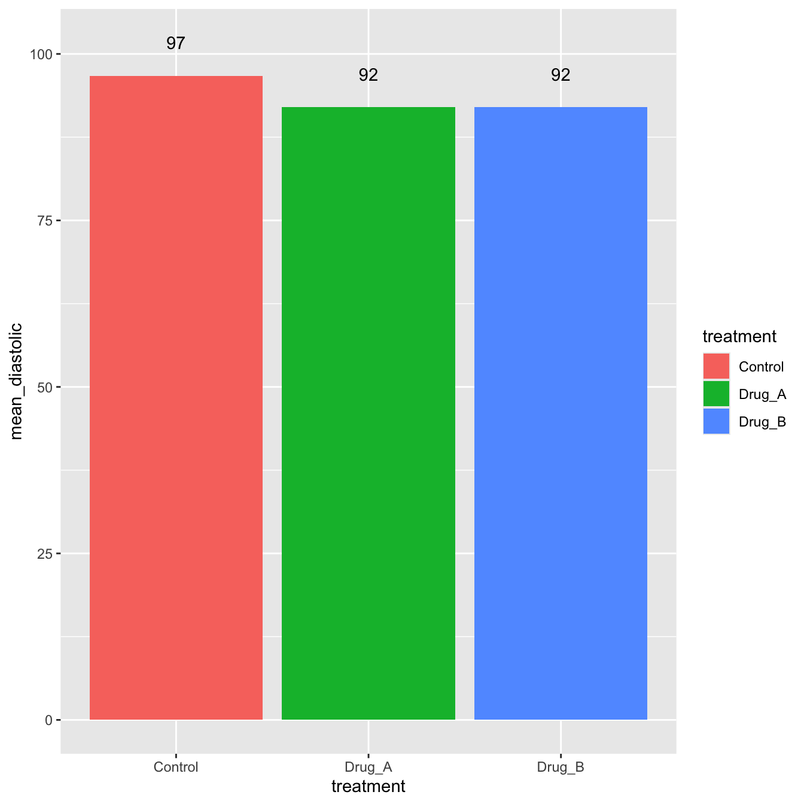
Here the complete list of options for geom_boxplot.
3.2.4 Density plot
Another way to visualize the distribution of the data is the density plot. Let’s see the distribution of BMI among stage groups.
BMI_stages_density <- ggplot(df) +
geom_density(aes(x = BMI, fill = stage), alpha = 0.3)
BMI_stages_density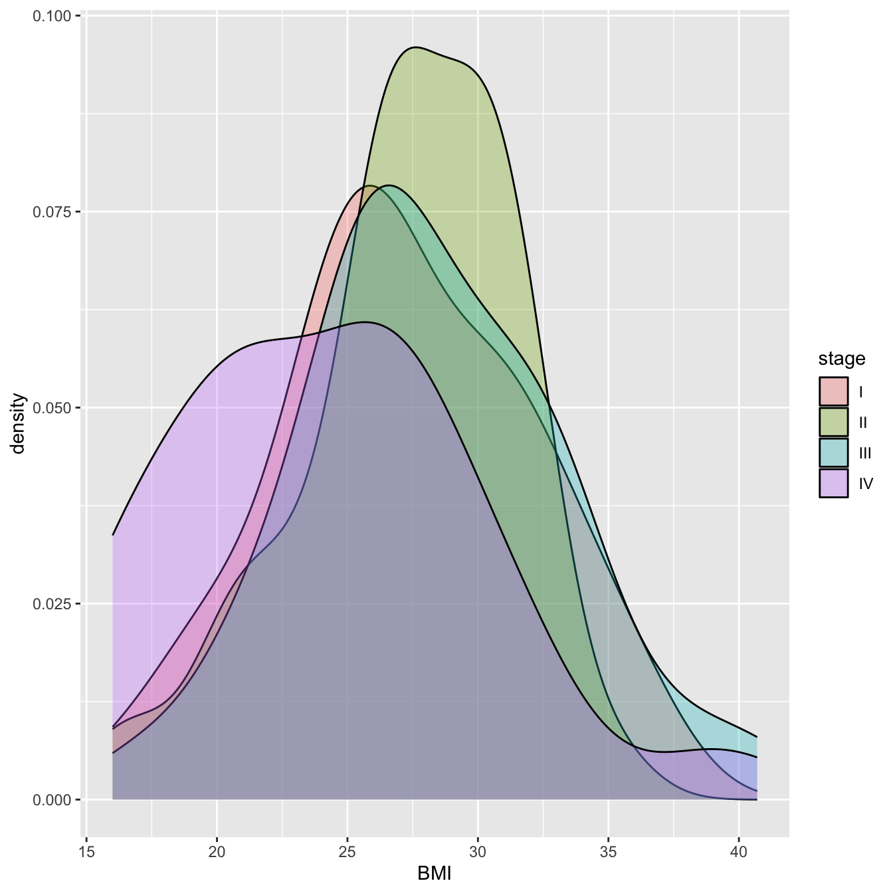
3.2.5 Combine geom
We can also combine geometries. For example, let’s add to the stageI_female_diastolic_means_barplot the actual values with geom_text:
stageI_female_diastolic_means_barplot <- stageI_female_diastolic_means_barplot +
geom_text(aes(x = treatment, y = mean_diastolic, label = round(mean_diastolic)), nudge_y = 5)
stageI_female_diastolic_means_barplot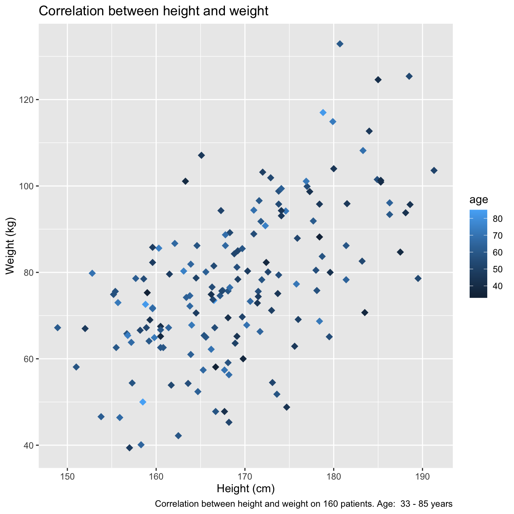
We can combine as many as we want, another example is combine geom_boxplot with geom_point to add individual data points on the plot.
ggplot(df) +
geom_boxplot(aes(x = stage, y = diastolic_bp_mmhg, fill = sex),
color = "black", outlier.color = "black", position = position_dodge(width = 0.75)) +
geom_jitter(aes(x = stage, y = diastolic_bp_mmhg, fill = sex),
position = position_dodge(width = 0.75), color = "black", alpha = 0.6, shape = 1)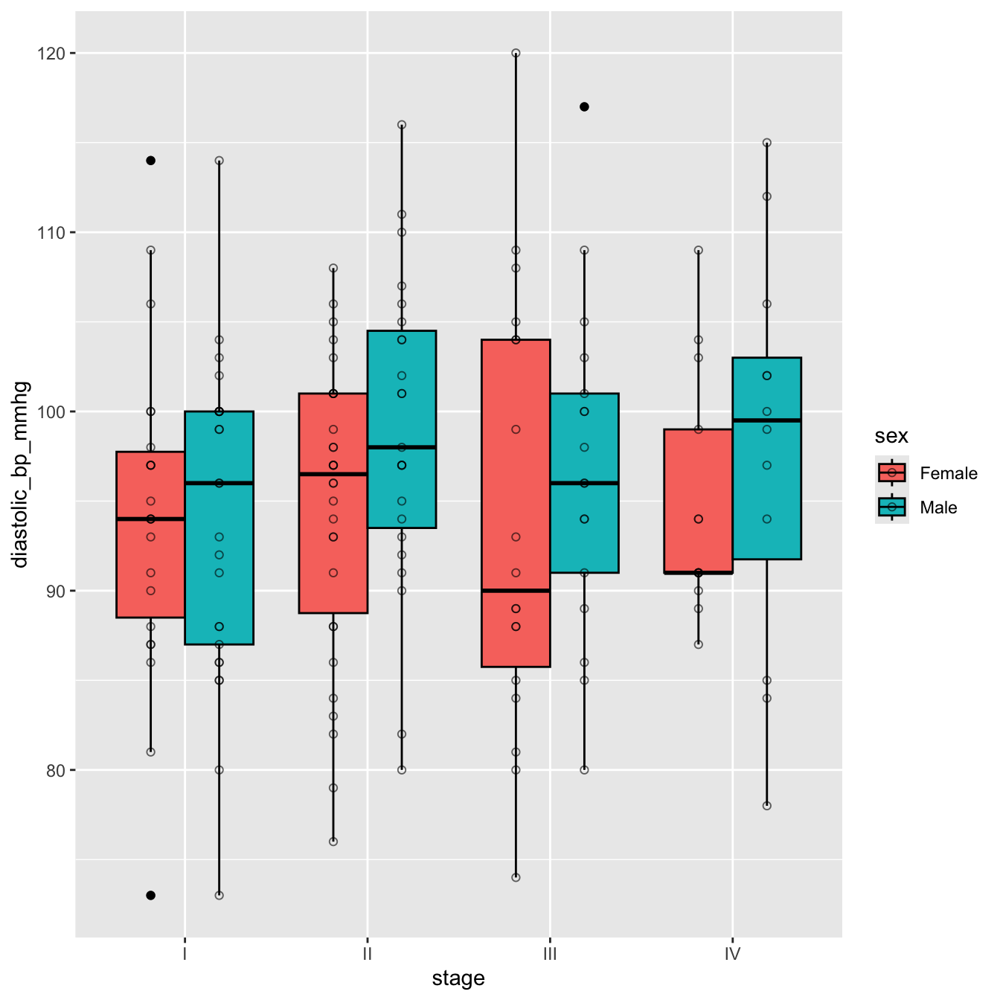
3.3 Labs
All these plots are a good starting point, but we can now start to personalize them. The first thing we can change are labs.
Labs comprehends axis title, plot title and subtitle, legend titles, caption and tag (here the reference page with examples).
ggplot() +
geom_<type>() +
labs()Let’s change the labels of the correlation plot:
corr_plot <- corr_plot +
labs(title = "Correlation between height and weight",
x = "Height (cm)",
y = "Weight (kg)",
caption = paste("Correlation between height and weight on", dim(df)[1], "patients. Age: ",
min(df$age), "-", max(df$age), "years"))
corr_plot
3.4 Scales
The definition of scales from the official documentation is “Scales control the details of how data values are translated to visual properties”. Practically speaking, with scales we can control the data on the axis, the colors and the other parameters of the aesthetics (linetype, size, fill) by calling the correspondent function (that’s what “
ggplot() +
geom_<type>() +
labs() +
scale_<type>() We will see the main application of it.
3.4.1 Axis
With scales_x/y_<type> (if continuous, binned, manual or discrete) we can control the details of the axis, such as breaks, labels, limits, mathematical transformation and so on.
For example, we can change the breaks on both x and y axis of diastolic_bp_boxplot:
- on y axis, the distance between breaks is now 10, we change it to 5
- on x axis, we change the labels of the axis with the first letter uppercase
diastolic_bp_boxplot <- diastolic_bp_boxplot +
labs(x = "Smoking", y = "Diastolic blood pressure (mmHg)") +
scale_y_continuous(breaks = seq(0, max(df$diastolic_bp_mmhg), 5)) +
scale_x_discrete(labels = c("Current", "Former", "Never"))
diastolic_bp_boxplot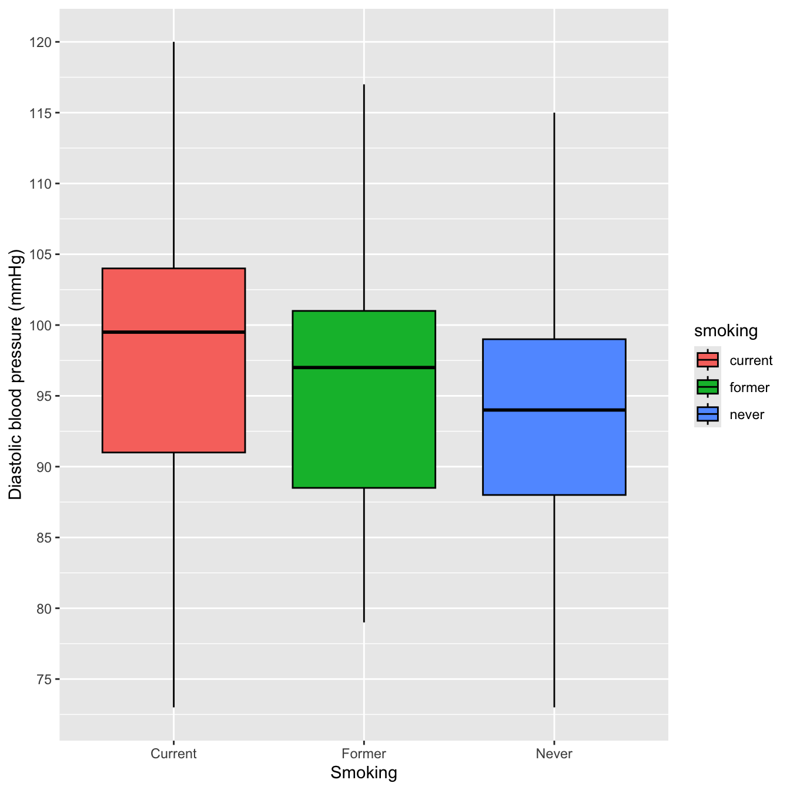
QUESTO SOLO NEL SITO
We can also apply mathematical transformation to continuous axis (like log scales):
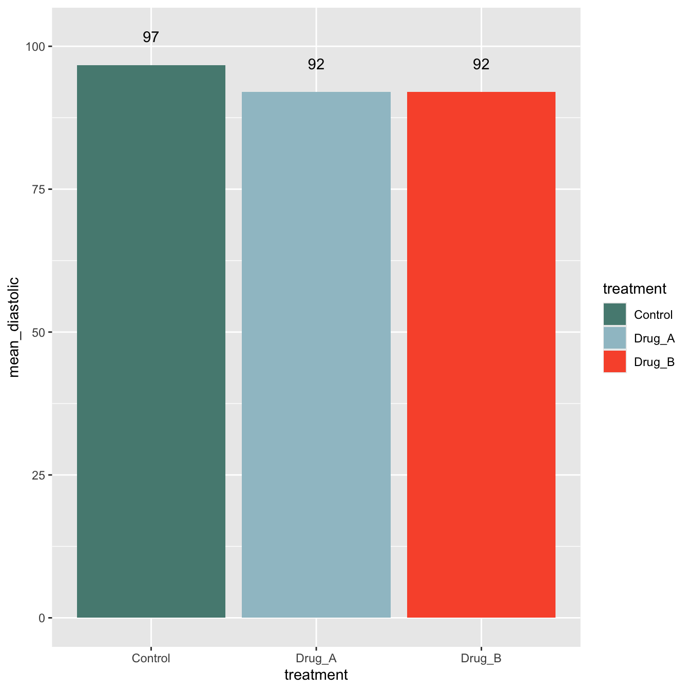
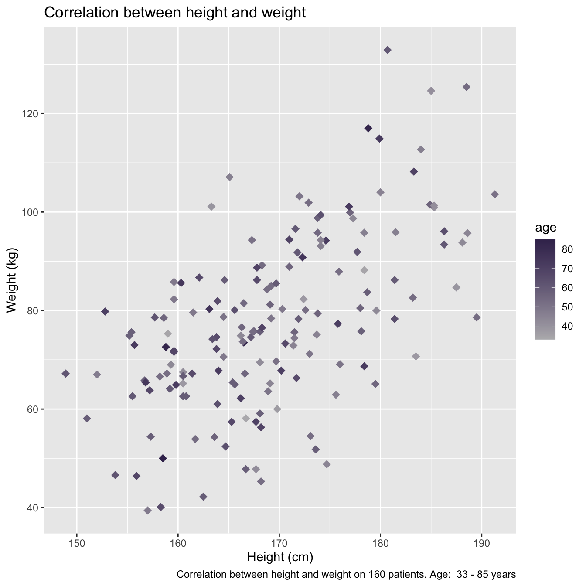
3.4.2 Colors
When we set fill or color aesthetics, we actually do not choose the colors that ggplot apply, we just say to it to make them different. With scales, we can set the colors we want. This site is very useful to choose colors.
For example, in stageI_female_diastolic_means_barplot, we want the Control to be gray, Drug_A to be blueish and Drug_B to be red. We can set it up like this:
stageI_female_diastolic_means_barplot <- stageI_female_diastolic_means_barplot +
scale_fill_manual(values = c("Control" = "#568A81",
"Drug_A" = "#9FC2CC",
"Drug_B" = "#F95738"))
stageI_female_diastolic_means_barplot
See this insite.) on hex color codes.
We can also change the color bar of corr_plot:

See this stackoverflow post for some useful tips and explanation on color scales in ggplot.
Exercise 3.1 Create a boxplot of platelets_10e9l in males, divided by stage (x axis) and treatment (fill). Then:
- y axis label should be “Platelets 10^9/L”, with breaks every 75 starting from the minum value of platelets_10e9l up to the maximum value of platelets_10e9l
- Treatment colors should be the same as the ones in stageI_female_diastolic_means_barplot
- The title of the plot shoul be meaningful
Solution
males_df <- df |>
filter(sex == "Male")
ggplot(males_df) +
geom_boxplot(aes(x = stage, y = platelets_10e9l, fill = treatment)) +
labs(y = "Platelets 10^9/L",
title = "Distribution of Platelets concentration in males") +
scale_fill_manual(values = c("Control" = "#568A81",
"Drug_A" = "#9FC2CC",
"Drug_B" = "#F95738")) +
scale_y_continuous(breaks = seq(min(males_df$platelets_10e9l), max(males_df$platelets_10e9l), 75))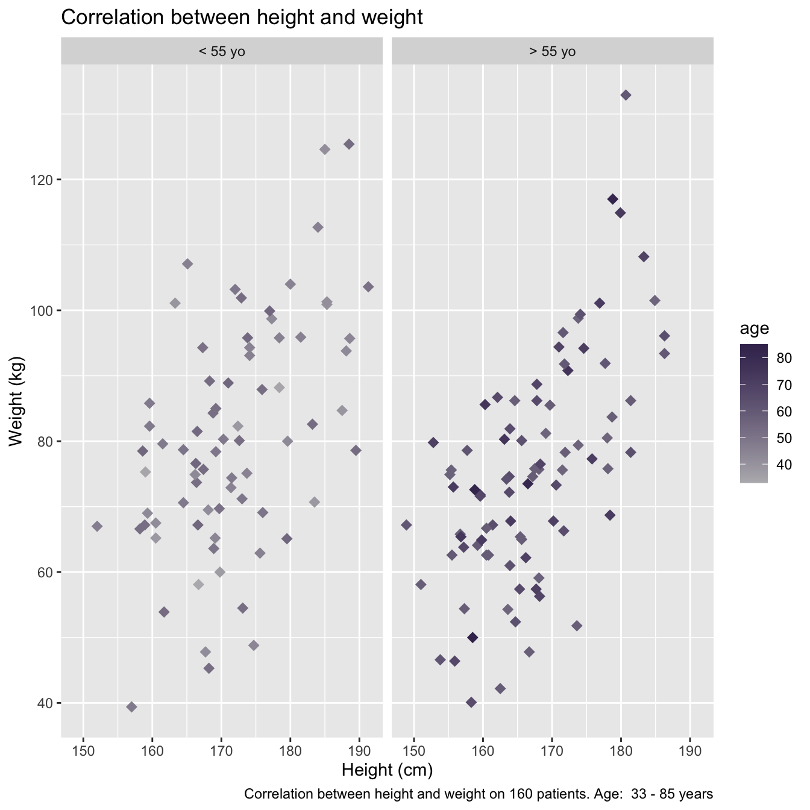
3.5 Facet
Faceting allow us to create a grid of panels, splitting data based on categorical variables.
ggplot() +
geom_<type>() +
labs() +
scale_<type>() +
facet_<type>() +
Let’s see how we can rearrange the same data as in all_n_barplot but using multiple panels:
ggplot(df) +
geom_bar(mapping = aes(x = stage, fill = treatment), position = "dodge") +
facet_wrap(~ site)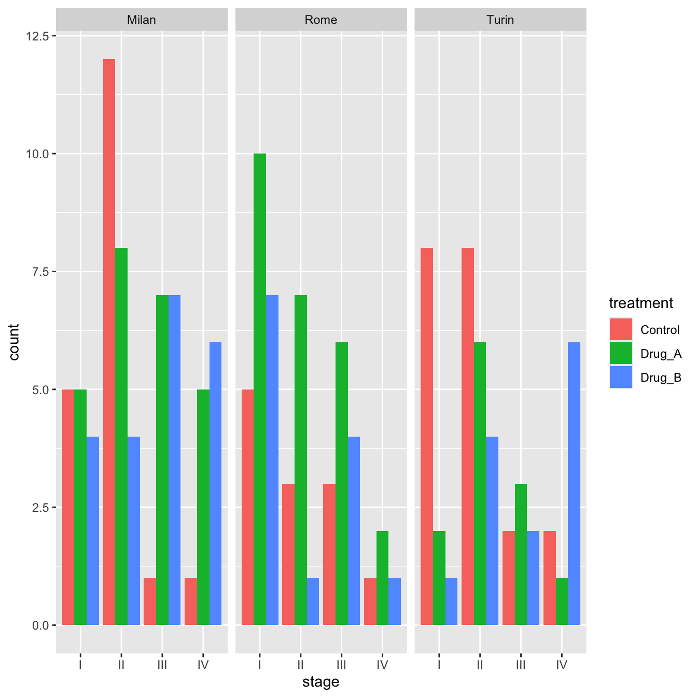
We can also customize the labels, similar to using scales:
corr_plot +
facet_wrap(~ age > 55, labeller = labeller(`age > 55` = c("TRUE" = "> 55 yo", "FALSE" = "< 55 yo")))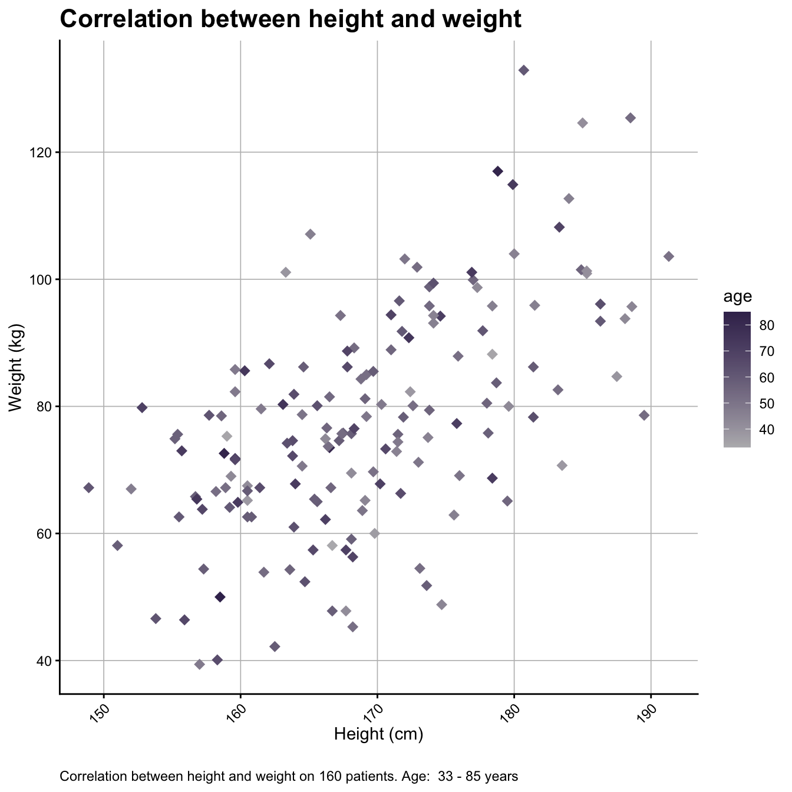
3.6 Theme
Ok, let’s now see the last part (and maybe the most useful) of code. Theme allow us to control practically every single elements of the plot (except for the data): lines, font, labels, breaks, etc.
ggplot() +
geom_<type>() +
labs() +
scale_<type>() +
facet_<type>() +
theme_<type>
There are few pre-installed theme, and we can further customize things with theme. Let’s firt apply classic theme to diastolic_bp_boxplot:
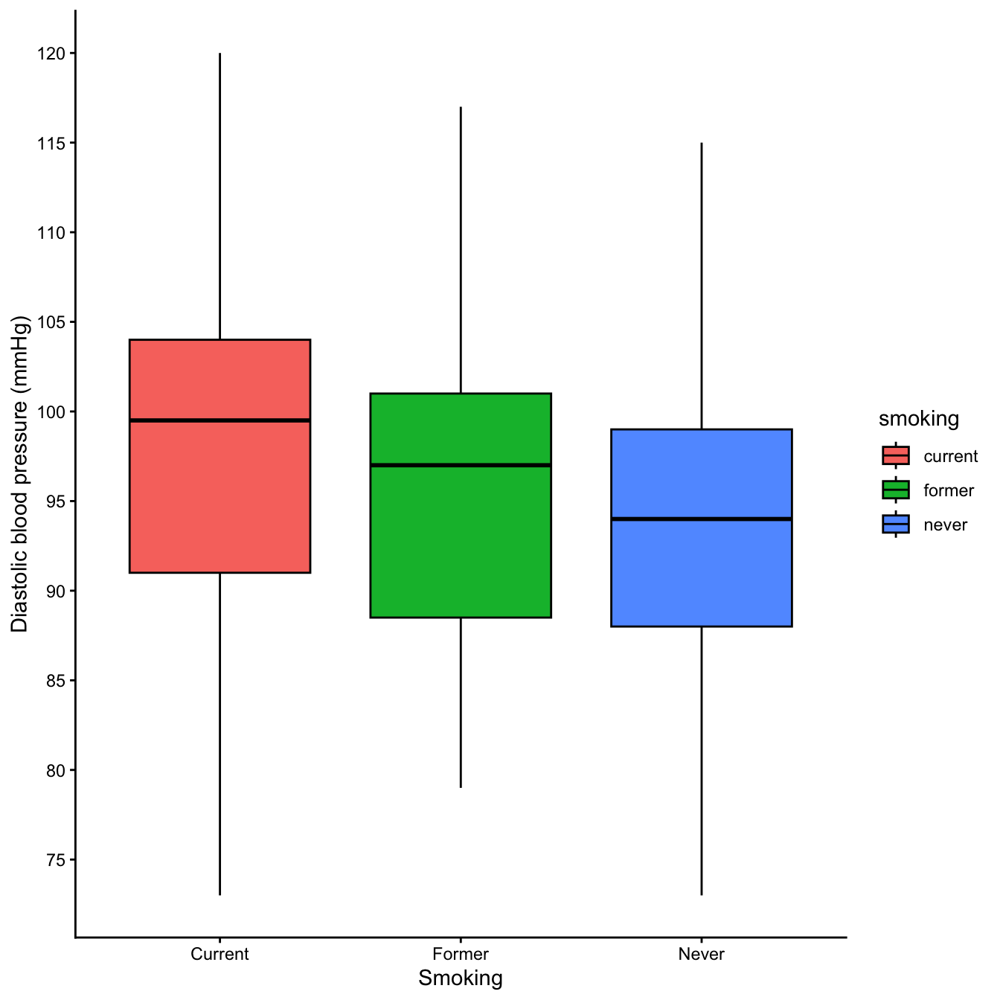
And now let’s customize corr_plot:
- Title in bold and 16 pt size
- Add major grid lines in gray and 0.3 pt size
- Rotate x axis labels to 45°
- Change the adjustment of plot caption to left
- Add bottom margin to x title
corr_plot <- corr_plot +
theme_classic() +
theme(plot.title = element_text(face = "bold", size = 16),
panel.grid.major = element_line(colour = "gray", linewidth = 0.3),
axis.text.x = element_text(angle = 45, hjust = 1),
plot.caption = element_text(hjust = 0),
axis.title.x = element_text(margin = margin(b = 12)))
corr_plot
3.7 Save the plots
To save a plot to a file, we can use the function ggsave like this:
ggsave(plot = corr_plot, filename = "output/height_weight_corr-plot.pdf", units = "mm", width = 200, height = 140)We can set units, width and height. See this article for further details about dimensions, dpi, dots etc.
3.8 Advanced examples
Here are some more advanced examples:
BMI_stages_density +
labs(title = "BMI distribution at different stages", fill = "Stage") + # change labels
scale_y_continuous(expand = expansion(mult = c(0, 0.1))) + # remove space at the bottom of y axis
scale_x_continuous(expand = expansion(mult = c(0, 0)), breaks = seq(0, max(df$BMI), 2.5)) + # reduce outer space of x axis
scale_fill_manual(values = c("I" = "#E0A890", "II" = "#2B59C3", "III" = "#9E2B25", "IV" = "#23CE6B")) + # change fill colors
theme_classic() +
theme(axis.line.y = element_blank(), # remove y-axes line
axis.text.y = element_blank(), # remove y-axes labels
axis.ticks.y = element_blank(), # remove y-axes ticks
axis.title.y = element_blank(), # remove y-axes title
legend.position = "top", # change legend position
plot.title = element_text(size = 18, family = "sans", face = "bold", margin = margin(b = 8)), # change title style
axis.title.x = element_text(size = 12, margin = margin(t = 10)),
legend.key.size = unit(x = 5, units = "mm") # change legens key size
)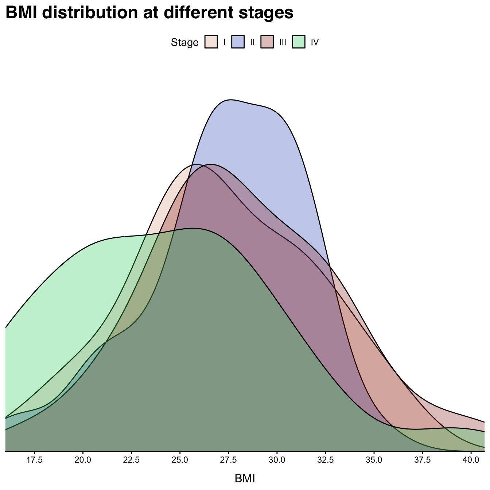
ggplot(df) +
stat_summary(aes(x = stage, y = height_cm, color = weight_kg > 90), fun.data = "mean_se", geom = "pointrange", size = .4) +
labs(y = "Height (cm)", color = "Weight") +
scale_color_manual(labels = c("TRUE" = "> 90kg", "FALSE" = "< 90kg"), values = c("TRUE" = "red", "FALSE" = "blue")) +
theme_classic()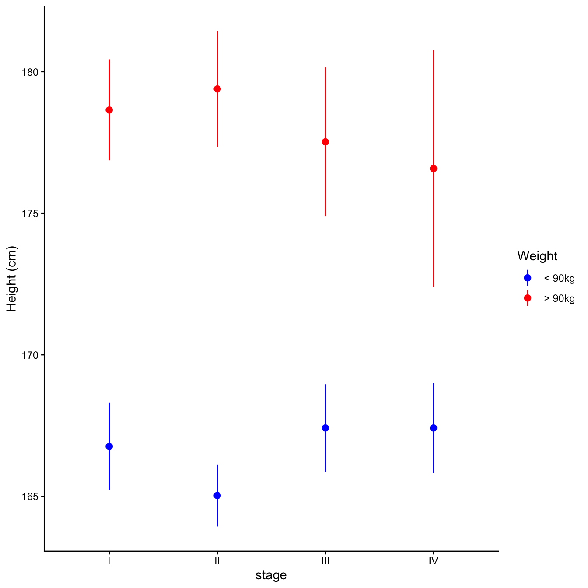
Exercise 3.2 Create a plot that shows if the levels of creatinine_mgdl changes depending on the year in each site. Set a proper scale for y axis, split the plot in panels, change the colors of the years, add a title. Tip: visit_year now is numeric, while we want it to be……..
bonus add the information about the numerosity in each group (year/site) at the bottom of x axis.
Solution
df$visit_year <- factor(df$visit_year)
df_n <- df |>
group_by(site, visit_year) |>
summarize(n = n(), .groups = "drop")
ggplot(df) +
geom_boxplot(aes(x = visit_year, y = creatinine_mgdl, fill = visit_year),
position = position_dodge(width = 0.75)) +
geom_text(data = df_n,
aes(x = visit_year, y = min(df$creatinine_mgdl) - 0.1, label = paste0("n=", n)),
size = 3) +
labs(y = "Creatinine (mg/dL)",
title = "Creatinine levels increase over time in 2 sites out of 3",
x = "Year",
fill = "Year") +
scale_fill_manual(values = c("2018" = "#D6F49D",
"2020" = "#C1EF6C",
"2023" = "#A2E723",
"2025" = "#59810E")) +
scale_y_continuous(breaks = seq(0, max(df$creatinine_mgdl), 0.2)) +
facet_wrap(~ site) +
theme_classic()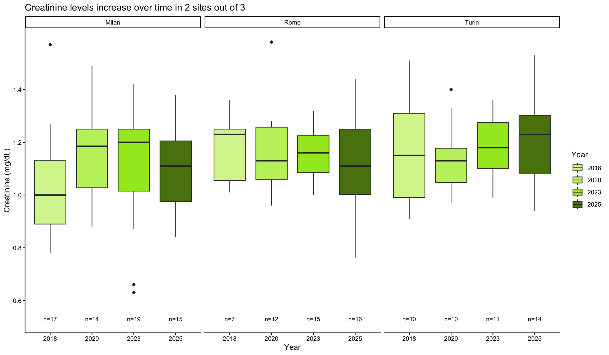